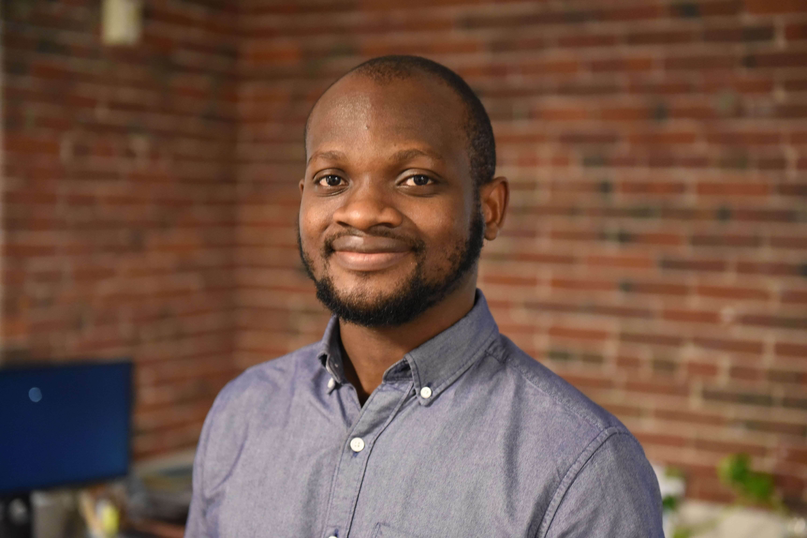

Clinical Research Scientist · Quantitative Researcher
DePauw University · DS4CABS 2026 Summer Intern
Reuben Addison is a clinical research scientist and quantitative researcher working at the intersection of study design, Bayesian statistics, and biomedical data science. His work focuses on making the assumptions behind scientific and clinical decisions explicit, traceable, and testable.
His research spans Parkinson's disease, longitudinal clinical outcomes, cardiovascular risk, movement science, and clinical trial design. He is an Assistant Professor of Kinesiology and Director of the Motor Control Lab at DePauw University, holds a Ph.D. in Motor Behavior, and completed the Computational Data Analytics Track, the data science track, of Georgia Tech's M.S. in Analytics.
During the 2026 CABS Data Science Summer Internship, Reuben developed OpenTrial, a Bayesian clinical trial design engine under the mentorship of Prof. Shicheng Guo.
OpenTrial starts with a treatment and endpoint, gathers relevant public evidence, and produces a traceable study-design report. It integrates sources including ClinicalTrials.gov, PubMed, openFDA, DailyMed, Open Targets, PharmGKB, and Semantic Scholar, then connects that evidence to power, assurance, prior-sensitivity analysis, predictive probability of success, and simulation-based design calculations.
The central rule is simple: only evidence with a quantifiable effect size and associated standard error is allowed to update the prior. Other records remain visible for provenance, but they do not quietly influence the mathematics.
Reuben treated validation as part of the research problem, not as a final software check. OpenTrial includes 100 offline tests and 46 independent validation checks against SciPy, statsmodels, closed-form calculations, and separately written Monte Carlo implementations.
That process exposed implementation problems that ordinary unit testing had missed, including a Type I error calculation that appeared correct because calibration and evaluation had reused the same simulated paths, and a heterogeneity calculation that double-counted sampling error. Both were corrected.
Reuben is continuing to work at the intersection of clinical research, Bayesian trial design, biomedical machine learning, and reproducible evidence pipelines through his lab at DePauw and collaborations in biopharma.
He is particularly interested in problems where quantitative methods can make a clinical or development decision more transparent, reproducible, and easier to defend. OpenTrial remains a learning-oriented research tool and is not validated for real-world clinical use.